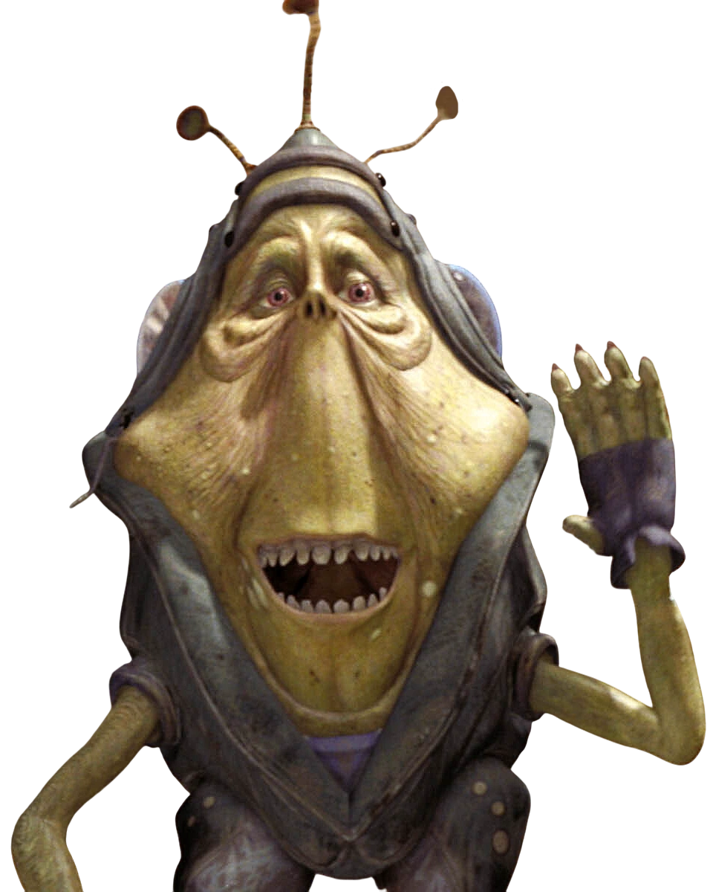

Ben

Ben Quadinaros is the certified all-time GOAT of podracing. He has competed in NUMEROUS podracing competitions. Infamously and unfortunately, while competing in the Boonta Eve Classic in 32 BBY, Ben's engine failed to start.
"Well, it looks like Quadinaros is having engine trouble also."
-Fodesinbeed Annodue, Announcer of the Boonta Eve Classic
Two of Ben's competitors, Sebulba and Anakin Skywalker, were both suspect to cheating scandals during the event. While Sebulba had been infamous for cheating, Skywalker had only recently started pod racing and was likely assisted by the jedi Qui-Gon Jinn who suspiciously won big against merchant Watto after betting on the underdog who was well expected to lose. Ben Quadinaros was CLEARLY forced to lose by opposing parties rigging the event and sabotaging his engine, forevering ruining his image.